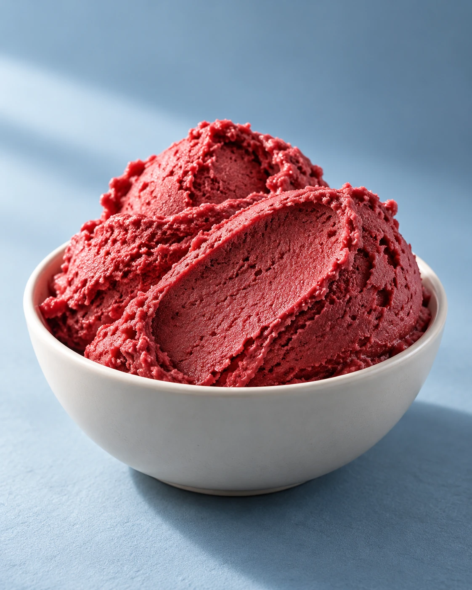

01 · Gastronomía
En desarrolloEl frío tiene textura


Nueva exploración de helado de frambuesa: pliegues de espátula, luz lateral y contraste sobre un fondo azul grisáceo.
Ver el proceso y el estado
- Intención
- Hacer que la textura del helado sea el centro de la imagen.
- Decisión creativa
- El rojo frambuesa y los pliegues se construyen a partir de referencias aportadas por Matías. La luz lateral describe el relieve y el fondo frío separa el producto.
- Por resolver
- Primera prueba de la nueva dirección. Revisar la abundancia del servido antes de producir detalle y contexto.
- Producción
- Imagen generada con ChatGPT a partir de referencias visuales. Proyecto personal conceptual, sin cliente ni resultados comerciales asociados.